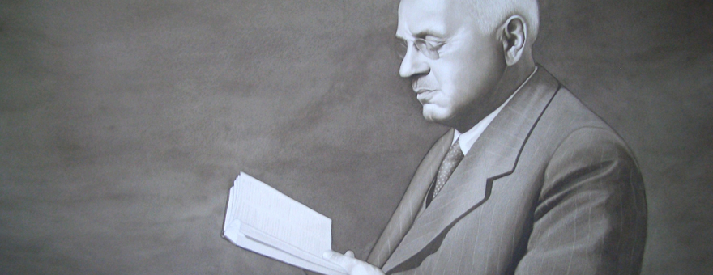

Alfred Adler

Adler reading one his works to an audience.
Alfred Adler was the founder of the school of Individual Psychology. He was born in a village on the fringes of Vienna, Austria. He started his career as a doctor, but then switched to psychology after receiving an invitation to join an informal discussion group from Sigmun Freud. Over the years, Adler's views started to clash with Freud's views on psychology. Eventually, Adler broke away from the psychoanalytic movement, and he went on tours to give lectures on his approach to human psychology.
Click here to learn more about Alfred Adler.